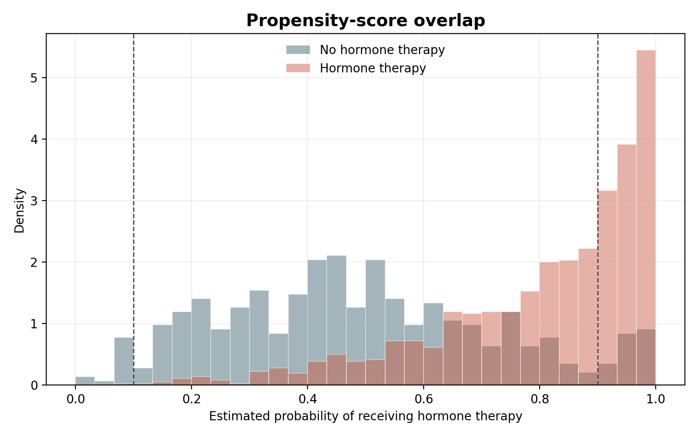

1. Tiny confounding idea
Loading...
Wrong quick conclusion
The big message
A treatment group can look worse simply because that group started off older, sicker, or later stage before we ever compare outcomes.
2. Clickable fictional examples
Breast-cancer-like examples, clearly labeled as illustrations
Loading...
Loading...
Loading...
Crude survival
Loading...
Loading...
Crude survival
Loading...
Misleading conclusion
3. Confounding simulator
Loading...
Toy crude survival
Loading...
Treated group
Toy crude survival
Loading...
Untreated group
Naive conclusion
Why that can be misleading
4. One real completed case
The only completed real causal case so far
This is the one real completed Stage 2 case study at the moment. Everything else shown later is future candidate work, not finished analysis.
Cohort
Loading...
Subgroup
Loading...
Treatment question
Loading...
Patients / events
Loading...
Loading...
Naive estimate
Loading...
Adjusted estimate
Loading...

5. Methods, briefly
What the adjustment methods try to fix
Choose a method card

6. What we studied now vs what comes next
Studied now
Future candidate analyses
Future candidate analysis
7. Why this matters for the final AI model
Clean treatment signals matter
Without adjustment
Still future work
Conceptual flow
20-second talk track